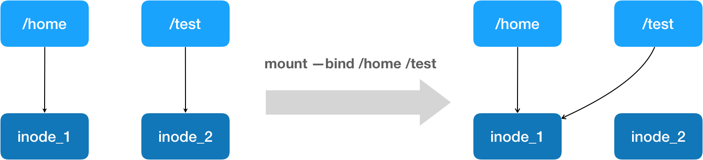

- 00 开篇词 打通“容器技术”的任督二脉.md.html
- 01 预习篇 · 小鲸鱼大事记（一）：初出茅庐.md.html
- 02 预习篇 · 小鲸鱼大事记（二）：崭露头角.md.html
- 03 预习篇 · 小鲸鱼大事记（三）：群雄并起.md.html
- 04 预习篇 · 小鲸鱼大事记（四）：尘埃落定.md.html
- 05 白话容器基础（一）：从进程说开去.md.html
- 06 白话容器基础（二）：隔离与限制.md.html
- 07 白话容器基础（三）：深入理解容器镜像.md.html
- 08 白话容器基础（四）：重新认识Docker容器.md.html
- 09 从容器到容器云：谈谈Kubernetes的本质.md.html
- 10 Kubernetes一键部署利器：kubeadm.md.html
- 11 从0到1：搭建一个完整的Kubernetes集群.md.html
- 12 牛刀小试：我的第一个容器化应用.md.html
- 13 为什么我们需要Pod？.md.html
- 14 深入解析Pod对象（一）：基本概念.md.html
- 15 深入解析Pod对象（二）：使用进阶.md.html
- 16 编排其实很简单：谈谈“控制器”模型.md.html
- 17 经典PaaS的记忆：作业副本与水平扩展.md.html
- 18 深入理解StatefulSet（一）：拓扑状态.md.html
- 19 深入理解StatefulSet（二）：存储状态.md.html
- 20 深入理解StatefulSet（三）：有状态应用实践.md.html
- 21 容器化守护进程的意义：DaemonSet.md.html
- 22 撬动离线业务：Job与CronJob.md.html
- 23 声明式API与Kubernetes编程范式.md.html
- 24 深入解析声明式API（一）：API对象的奥秘.md.html
- 25 深入解析声明式API（二）：编写自定义控制器.md.html
- 26 基于角色的权限控制：RBAC.md.html
- 27 聪明的微创新：Operator工作原理解读.md.html
- 28 PV、PVC、StorageClass，这些到底在说啥？.md.html
- 29 PV、PVC体系是不是多此一举？从本地持久化卷谈起.md.html
- 30 编写自己的存储插件：FlexVolume与CSI.md.html
- 31 容器存储实践：CSI插件编写指南.md.html
- 32 浅谈容器网络.md.html
- 33 深入解析容器跨主机网络.md.html
- 34 Kubernetes网络模型与CNI网络插件.md.html
- 35 解读Kubernetes三层网络方案.md.html
- 36 为什么说Kubernetes只有soft multi-tenancy？.md.html
- 37 找到容器不容易：Service、DNS与服务发现.md.html
- 38 从外界连通Service与Service调试“三板斧”.md.html
- 39 谈谈Service与Ingress.md.html
- 40 Kubernetes的资源模型与资源管理.md.html
- 41 十字路口上的Kubernetes默认调度器.md.html
- 42 Kubernetes默认调度器调度策略解析.md.html
- 43 Kubernetes默认调度器的优先级与抢占机制.md.html
- 44 Kubernetes GPU管理与Device Plugin机制.md.html
- 45 幕后英雄：SIG-Node与CRI.md.html
- 46 解读 CRI 与 容器运行时.md.html
- 47 绝不仅仅是安全：Kata Containers 与 gVisor.md.html
- 48 Prometheus、Metrics Server与Kubernetes监控体系.md.html
- 49 Custom Metrics_ 让Auto Scaling不再“食之无味”.md.html
- 50 让日志无处可逃：容器日志收集与管理.md.html
- 51 谈谈Kubernetes开源社区和未来走向.md.html
- 52 答疑：在问题中解决问题，在思考中产生思考.md.html
- 特别放送 2019 年，容器技术生态会发生些什么？.md.html
- 特别放送 基于 Kubernetes 的云原生应用管理，到底应该怎么做？.md.html
- 结束语 Kubernetes：赢开发者赢天下.md.html
- 捐赠
08 白话容器基础（四）：重新认识Docker容器
你好，我是张磊。今天我和你分享的主题是：白话容器基础之重新认识Docker容器。
在前面的三次分享中，我分别从Linux Namespace的隔离能力、Linux Cgroups的限制能力，以及基于rootfs的文件系统三个角度，为你剖析了一个Linux容器的核心实现原理。
备注：之所以要强调Linux容器，是因为比如Docker on Mac，以及Windows Docker（Hyper-V实现），实际上是基于虚拟化技术实现的，跟我们这个专栏着重介绍的Linux容器完全不同。
而在今天的分享中，我会通过一个实际案例，对“白话容器基础”系列的所有内容做一次深入的总结和扩展。希望通过这次的讲解，能够让你更透彻地理解Docker容器的本质。
在开始实践之前，你需要准备一台Linux机器，并安装Docker。这个流程我就不再赘述了。
这一次，我要用Docker部署一个用Python编写的Web应用。这个应用的代码部分（app.py）非常简单：
from flask import Flask
import socket
import os
app = Flask(__name__)
@app.route('/')
def hello():
html = "<h3>Hello {name}!</h3>" \
"<b>Hostname:</b> {hostname}<br/>"
return html.format(name=os.getenv("NAME", "world"), hostname=socket.gethostname())
if __name__ == "__main__":
app.run(host='0.0.0.0', port=80)
在这段代码中，我使用Flask框架启动了一个Web服务器，而它唯一的功能是：如果当前环境中有“NAME”这个环境变量，就把它打印在“Hello”之后，否则就打印“Hello world”，最后再打印出当前环境的hostname。
这个应用的依赖，则被定义在了同目录下的requirements.txt文件里，内容如下所示：
$ cat requirements.txt
Flask
而将这样一个应用容器化的第一步，是制作容器镜像。
不过，相较于我之前介绍的制作rootfs的过程，Docker为你提供了一种更便捷的方式，叫作Dockerfile，如下所示。
# 使用官方提供的Python开发镜像作为基础镜像
FROM python:2.7-slim
# 将工作目录切换为/app
WORKDIR /app
# 将当前目录下的所有内容复制到/app下
ADD . /app
# 使用pip命令安装这个应用所需要的依赖
RUN pip install --trusted-host pypi.python.org -r requirements.txt
# 允许外界访问容器的80端口
EXPOSE 80
# 设置环境变量
ENV NAME World
# 设置容器进程为：python app.py，即：这个Python应用的启动命令
CMD ["python", "app.py"]
通过这个文件的内容，你可以看到Dockerfile的设计思想，是使用一些标准的原语（即大写高亮的词语），描述我们所要构建的Docker镜像。并且这些原语，都是按顺序处理的。
比如FROM原语，指定了“python:2.7-slim”这个官方维护的基础镜像，从而免去了安装Python等语言环境的操作。否则，这一段我们就得这么写了：
FROM ubuntu:latest
RUN apt-get update -yRUN apt-get install -y python-pip python-dev build-essential
...
其中，RUN原语就是在容器里执行shell命令的意思。
而WORKDIR，意思是在这一句之后，Dockerfile后面的操作都以这一句指定的/app目录作为当前目录。
所以，到了最后的CMD，意思是Dockerfile指定python app.py为这个容器的进程。这里，app.py的实际路径是/app/app.py。所以，CMD ["python", "app.py"]等价于”docker run <image> python app.py“。
另外，在使用Dockerfile时，你可能还会看到一个叫作ENTRYPOINT的原语。实际上，它和CMD都是Docker容器进程启动所必需的参数，完整执行格式是：“ENTRYPOINT CMD”。
但是，默认情况下，Docker会为你提供一个隐含的ENTRYPOINT，即：/bin/sh -c。所以，在不指定ENTRYPOINT时，比如在我们这个例子里，实际上运行在容器里的完整进程是：/bin/sh -c "python app.py"，即CMD的内容就是ENTRYPOINT的参数。
备注：基于以上原因，我们后面会统一称Docker容器的启动进程为ENTRYPOINT，而不是CMD。
需要注意的是，Dockerfile里的原语并不都是指对容器内部的操作。就比如ADD，它指的是把当前目录（即Dockerfile所在的目录）里的文件，复制到指定容器内的目录当中。
读懂这个Dockerfile之后，我再把上述内容，保存到当前目录里一个名叫“Dockerfile”的文件中：
$ ls
Dockerfile app.py requirements.txt
接下来，我就可以让Docker制作这个镜像了，在当前目录执行：
$ docker build -t helloworld .
其中，-t的作用是给这个镜像加一个Tag，即：起一个好听的名字。docker build会自动加载当前目录下的Dockerfile文件，然后按照顺序，执行文件中的原语。而这个过程，实际上可以等同于Docker使用基础镜像启动了一个容器，然后在容器中依次执行Dockerfile中的原语。
需要注意的是，Dockerfile中的每个原语执行后，都会生成一个对应的镜像层。即使原语本身并没有明显地修改文件的操作（比如，ENV原语），它对应的层也会存在。只不过在外界看来，这个层是空的。
docker build操作完成后，我可以通过docker images命令查看结果：
$ docker image ls
REPOSITORY TAG IMAGE ID
helloworld latest 653287cdf998
通过这个镜像ID，你就可以使用在《白话容器基础（三）：深入理解容器镜像》中讲过的方法，查看这些新增的层在AuFS路径下对应的文件和目录了。
接下来，我使用这个镜像，通过docker run命令启动容器：
$ docker run -p 4000:80 helloworld
在这一句命令中，镜像名helloworld后面，我什么都不用写，因为在Dockerfile中已经指定了CMD。否则，我就得把进程的启动命令加在后面：
$ docker run -p 4000:80 helloworld python app.py
容器启动之后，我可以使用docker ps命令看到：
$ docker ps
CONTAINER ID IMAGE COMMAND CREATED
4ddf4638572d helloworld "python app.py" 10 seconds ago
同时，我已经通过-p 4000:80告诉了Docker，请把容器内的80端口映射在宿主机的4000端口上。
这样做的目的是，只要访问宿主机的4000端口，我就可以看到容器里应用返回的结果：
$ curl http://localhost:4000
<h3>Hello World!</h3><b>Hostname:</b> 4ddf4638572d<br/>
否则，我就得先用docker inspect命令查看容器的IP地址，然后访问“http://<容器IP地址>:80”才可以看到容器内应用的返回。
至此，我已经使用容器完成了一个应用的开发与测试，如果现在想要把这个容器的镜像上传到DockerHub上分享给更多的人，我要怎么做呢？
为了能够上传镜像，我首先需要注册一个Docker Hub账号，然后使用docker login命令登录。
接下来，我要用docker tag命令给容器镜像起一个完整的名字：
$ docker tag helloworld geektime/helloworld:v1
注意：你自己做实验时，请将”geektime”替换成你自己的Docker Hub账户名称，比如zhangsan/helloworld:v1
其中，geektime是我在Docker Hub上的用户名，它的“学名”叫镜像仓库（Repository）；“/”后面的helloworld是这个镜像的名字，而“v1”则是我给这个镜像分配的版本号。
然后，我执行docker push：
$ docker push geektime/helloworld:v1
这样，我就可以把这个镜像上传到Docker Hub上了。
此外，我还可以使用docker commit指令，把一个正在运行的容器，直接提交为一个镜像。一般来说，需要这么操作原因是：这个容器运行起来后，我又在里面做了一些操作，并且要把操作结果保存到镜像里，比如：
$ docker exec -it 4ddf4638572d /bin/sh
# 在容器内部新建了一个文件
root@4ddf4638572d:/app# touch test.txt
root@4ddf4638572d:/app# exit
#将这个新建的文件提交到镜像中保存
$ docker commit 4ddf4638572d geektime/helloworld:v2
这里，我使用了docker exec命令进入到了容器当中。在了解了Linux Namespace的隔离机制后，你应该会很自然地想到一个问题：docker exec是怎么做到进入容器里的呢？
实际上，Linux Namespace创建的隔离空间虽然看不见摸不着，但一个进程的Namespace信息在宿主机上是确确实实存在的，并且是以一个文件的方式存在。
比如，通过如下指令，你可以看到当前正在运行的Docker容器的进程号（PID）是25686：
$ docker inspect --format '{{ .State.Pid }}' 4ddf4638572d
25686
这时，你可以通过查看宿主机的proc文件，看到这个25686进程的所有Namespace对应的文件：
$ ls -l /proc/25686/ns
total 0
lrwxrwxrwx 1 root root 0 Aug 13 14:05 cgroup -> cgroup:[4026531835]
lrwxrwxrwx 1 root root 0 Aug 13 14:05 ipc -> ipc:[4026532278]
lrwxrwxrwx 1 root root 0 Aug 13 14:05 mnt -> mnt:[4026532276]
lrwxrwxrwx 1 root root 0 Aug 13 14:05 net -> net:[4026532281]
lrwxrwxrwx 1 root root 0 Aug 13 14:05 pid -> pid:[4026532279]
lrwxrwxrwx 1 root root 0 Aug 13 14:05 pid_for_children -> pid:[4026532279]
lrwxrwxrwx 1 root root 0 Aug 13 14:05 user -> user:[4026531837]
lrwxrwxrwx 1 root root 0 Aug 13 14:05 uts -> uts:[4026532277]
可以看到，一个进程的每种Linux Namespace，都在它对应的/proc/[进程号]/ns下有一个对应的虚拟文件，并且链接到一个真实的Namespace文件上。
有了这样一个可以“hold住”所有Linux Namespace的文件，我们就可以对Namespace做一些很有意义事情了，比如：加入到一个已经存在的Namespace当中。
这也就意味着：一个进程，可以选择加入到某个进程已有的Namespace当中，从而达到“进入”这个进程所在容器的目的，这正是docker exec的实现原理。
而这个操作所依赖的，乃是一个名叫setns()的Linux系统调用。它的调用方法，我可以用如下一段小程序为你说明：
#define _GNU_SOURCE
#include <fcntl.h>
#include <sched.h>
#include <unistd.h>
#include <stdlib.h>
#include <stdio.h>
#define errExit(msg) do { perror(msg); exit(EXIT_FAILURE);} while (0)
int main(int argc, char *argv[]) {
int fd;
fd = open(argv[1], O_RDONLY);
if (setns(fd, 0) == -1) {
errExit("setns");
}
execvp(argv[2], &argv[2]);
errExit("execvp");
}
这段代码功能非常简单：它一共接收两个参数，第一个参数是argv[1]，即当前进程要加入的Namespace文件的路径，比如/proc/25686/ns/net；而第二个参数，则是你要在这个Namespace里运行的进程，比如/bin/bash。
这段代码的核心操作，则是通过open()系统调用打开了指定的Namespace文件，并把这个文件的描述符fd交给setns()使用。在setns()执行后，当前进程就加入了这个文件对应的Linux Namespace当中了。
现在，你可以编译执行一下这个程序，加入到容器进程（PID=25686）的Network Namespace中：
$ gcc -o set_ns set_ns.c
$ ./set_ns /proc/25686/ns/net /bin/bash
$ ifconfig
eth0 Link encap:Ethernet HWaddr 02:42:ac:11:00:02
inet addr:172.17.0.2 Bcast:0.0.0.0 Mask:255.255.0.0
inet6 addr: fe80::42:acff:fe11:2/64 Scope:Link
UP BROADCAST RUNNING MULTICAST MTU:1500 Metric:1
RX packets:12 errors:0 dropped:0 overruns:0 frame:0
TX packets:10 errors:0 dropped:0 overruns:0 carrier:0
collisions:0 txqueuelen:0
RX bytes:976 (976.0 B) TX bytes:796 (796.0 B)
lo Link encap:Local Loopback
inet addr:127.0.0.1 Mask:255.0.0.0
inet6 addr: ::1/128 Scope:Host
UP LOOPBACK RUNNING MTU:65536 Metric:1
RX packets:0 errors:0 dropped:0 overruns:0 frame:0
TX packets:0 errors:0 dropped:0 overruns:0 carrier:0
collisions:0 txqueuelen:1000
RX bytes:0 (0.0 B) TX bytes:0 (0.0 B)
正如上所示，当我们执行ifconfig命令查看网络设备时，我会发现能看到的网卡“变少”了：只有两个。而我的宿主机则至少有四个网卡。这是怎么回事呢？
实际上，在setns()之后我看到的这两个网卡，正是我在前面启动的Docker容器里的网卡。也就是说，我新创建的这个/bin/bash进程，由于加入了该容器进程（PID=25686）的Network Namepace，它看到的网络设备与这个容器里是一样的，即：/bin/bash进程的网络设备视图，也被修改了。
而一旦一个进程加入到了另一个Namespace当中，在宿主机的Namespace文件上，也会有所体现。
在宿主机上，你可以用ps指令找到这个set_ns程序执行的/bin/bash进程，其真实的PID是28499：
# 在宿主机上
ps aux | grep /bin/bash
root 28499 0.0 0.0 19944 3612 pts/0 S 14:15 0:00 /bin/bash
这时，如果按照前面介绍过的方法，查看一下这个PID=28499的进程的Namespace，你就会发现这样一个事实：
$ ls -l /proc/28499/ns/net
lrwxrwxrwx 1 root root 0 Aug 13 14:18 /proc/28499/ns/net -> net:[4026532281]
$ ls -l /proc/25686/ns/net
lrwxrwxrwx 1 root root 0 Aug 13 14:05 /proc/25686/ns/net -> net:[4026532281]
在/proc/[PID]/ns/net目录下，这个PID=28499进程，与我们前面的Docker容器进程（PID=25686）指向的Network Namespace文件完全一样。这说明这两个进程，共享了这个名叫net:[4026532281]的Network Namespace。
此外，Docker还专门提供了一个参数，可以让你启动一个容器并“加入”到另一个容器的Network Namespace里，这个参数就是-net，比如:
$ docker run -it --net container:4ddf4638572d busybox ifconfig
这样，我们新启动的这个容器，就会直接加入到ID=4ddf4638572d的容器，也就是我们前面的创建的Python应用容器（PID=25686）的Network Namespace中。所以，这里ifconfig返回的网卡信息，跟我前面那个小程序返回的结果一模一样，你也可以尝试一下。
而如果我指定–net=host，就意味着这个容器不会为进程启用Network Namespace。这就意味着，这个容器拆除了Network Namespace的“隔离墙”，所以，它会和宿主机上的其他普通进程一样，直接共享宿主机的网络栈。这就为容器直接操作和使用宿主机网络提供了一个渠道。
转了一个大圈子，我其实是为你详细解读了docker exec这个操作背后，Linux Namespace更具体的工作原理。
这种通过操作系统进程相关的知识，逐步剖析Docker容器的方法，是理解容器的一个关键思路，希望你一定要掌握。
现在，我们再一起回到前面提交镜像的操作docker commit上来吧。
docker commit，实际上就是在容器运行起来后，把最上层的“可读写层”，加上原先容器镜像的只读层，打包组成了一个新的镜像。当然，下面这些只读层在宿主机上是共享的，不会占用额外的空间。
而由于使用了联合文件系统，你在容器里对镜像rootfs所做的任何修改，都会被操作系统先复制到这个可读写层，然后再修改。这就是所谓的：Copy-on-Write。
而正如前所说，Init层的存在，就是为了避免你执行docker commit时，把Docker自己对/etc/hosts等文件做的修改，也一起提交掉。
有了新的镜像，我们就可以把它推送到Docker Hub上了：
$ docker push geektime/helloworld:v2
你可能还会有这样的问题：我在企业内部，能不能也搭建一个跟Docker Hub类似的镜像上传系统呢？
当然可以，这个统一存放镜像的系统，就叫作Docker Registry。感兴趣的话，你可以查看Docker的官方文档，以及VMware的Harbor项目。
最后，我再来讲解一下Docker项目另一个重要的内容：Volume（数据卷）。
前面我已经介绍过，容器技术使用了rootfs机制和Mount Namespace，构建出了一个同宿主机完全隔离开的文件系统环境。这时候，我们就需要考虑这样两个问题：
容器里进程新建的文件，怎么才能让宿主机获取到？
宿主机上的文件和目录，怎么才能让容器里的进程访问到？
这正是Docker Volume要解决的问题：Volume机制，允许你将宿主机上指定的目录或者文件，挂载到容器里面进行读取和修改操作。
在Docker项目里，它支持两种Volume声明方式，可以把宿主机目录挂载进容器的/test目录当中：
$ docker run -v /test ...
$ docker run -v /home:/test ...
而这两种声明方式的本质，实际上是相同的：都是把一个宿主机的目录挂载进了容器的/test目录。
只不过，在第一种情况下，由于你并没有显示声明宿主机目录，那么Docker就会默认在宿主机上创建一个临时目录 /var/lib/docker/volumes/[VOLUME_ID]/_data，然后把它挂载到容器的/test目录上。而在第二种情况下，Docker就直接把宿主机的/home目录挂载到容器的/test目录上。
那么，Docker又是如何做到把一个宿主机上的目录或者文件，挂载到容器里面去呢？难道又是Mount Namespace的黑科技吗？
实际上，并不需要这么麻烦。
在《白话容器基础（三）：深入理解容器镜像》的分享中，我已经介绍过，当容器进程被创建之后，尽管开启了Mount Namespace，但是在它执行chroot（或者pivot_root）之前，容器进程一直可以看到宿主机上的整个文件系统。
而宿主机上的文件系统，也自然包括了我们要使用的容器镜像。这个镜像的各个层，保存在/var/lib/docker/aufs/diff目录下，在容器进程启动后，它们会被联合挂载在/var/lib/docker/aufs/mnt/目录中，这样容器所需的rootfs就准备好了。
所以，我们只需要在rootfs准备好之后，在执行chroot之前，把Volume指定的宿主机目录（比如/home目录），挂载到指定的容器目录（比如/test目录）在宿主机上对应的目录（即/var/lib/docker/aufs/mnt/[可读写层ID]/test）上，这个Volume的挂载工作就完成了。
更重要的是，由于执行这个挂载操作时，“容器进程”已经创建了，也就意味着此时Mount Namespace已经开启了。所以，这个挂载事件只在这个容器里可见。你在宿主机上，是看不见容器内部的这个挂载点的。这就保证了容器的隔离性不会被Volume打破。
注意：这里提到的”容器进程”，是Docker创建的一个容器初始化进程(dockerinit)，而不是应用进程(ENTRYPOINT + CMD)。dockerinit会负责完成根目录的准备、挂载设备和目录、配置hostname等一系列需要在容器内进行的初始化操作。最后，它通过execv()系统调用，让应用进程取代自己，成为容器里的PID=1的进程。
而这里要使用到的挂载技术，就是Linux的绑定挂载（bind mount）机制。它的主要作用就是，允许你将一个目录或者文件，而不是整个设备，挂载到一个指定的目录上。并且，这时你在该挂载点上进行的任何操作，只是发生在被挂载的目录或者文件上，而原挂载点的内容则会被隐藏起来且不受影响。
其实，如果你了解Linux 内核的话，就会明白，绑定挂载实际上是一个inode替换的过程。在Linux操作系统中，inode可以理解为存放文件内容的“对象”，而dentry，也叫目录项，就是访问这个inode所使用的“指针”。
- 正如上图所示，mount –bind /home /test，会将/home挂载到/test上。其实相当于将/test的dentry，重定向到了/home的inode。这样当我们修改/test目录时，实际修改的是/home目录的inode。这也就是为何，一旦执行umount命令，/test目录原先的内容就会恢复：因为修改真正发生在的，是/home目录里。
所以，在一个正确的时机，进行一次绑定挂载，Docker就可以成功地将一个宿主机上的目录或文件，不动声色地挂载到容器中。
这样，进程在容器里对这个/test目录进行的所有操作，都实际发生在宿主机的对应目录（比如，/home，或者/var/lib/docker/volumes/[VOLUME_ID]/_data）里，而不会影响容器镜像的内容。
那么，这个/test目录里的内容，既然挂载在容器rootfs的可读写层，它会不会被docker commit提交掉呢？
也不会。
这个原因其实我们前面已经提到过。容器的镜像操作，比如docker commit，都是发生在宿主机空间的。而由于Mount Namespace的隔离作用，宿主机并不知道这个绑定挂载的存在。所以，在宿主机看来，容器中可读写层的/test目录（/var/lib/docker/aufs/mnt/[可读写层ID]/test），始终是空的。
不过，由于Docker一开始还是要创建/test这个目录作为挂载点，所以执行了docker commit之后，你会发现新产生的镜像里，会多出来一个空的/test目录。毕竟，新建目录操作，又不是挂载操作，Mount Namespace对它可起不到“障眼法”的作用。
结合以上的讲解，我们现在来亲自验证一下：
首先，启动一个helloworld容器，给它声明一个Volume，挂载在容器里的/test目录上：
$ docker run -d -v /test helloworld
cf53b766fa6f
容器启动之后，我们来查看一下这个Volume的ID：
$ docker volume ls
DRIVER VOLUME NAME
local cb1c2f7221fa9b0971cc35f68aa1034824755ac44a034c0c0a1dd318838d3a6d
然后，使用这个ID，可以找到它在Docker工作目录下的volumes路径：
$ ls /var/lib/docker/volumes/cb1c2f7221fa/_data/
这个_data文件夹，就是这个容器的Volume在宿主机上对应的临时目录了。
接下来，我们在容器的Volume里，添加一个文件text.txt：
$ docker exec -it cf53b766fa6f /bin/sh
cd test/
touch text.txt
这时，我们再回到宿主机，就会发现text.txt已经出现在了宿主机上对应的临时目录里：
$ ls /var/lib/docker/volumes/cb1c2f7221fa/_data/
text.txt
可是，如果你在宿主机上查看该容器的可读写层，虽然可以看到这个/test目录，但其内容是空的（关于如何找到这个AuFS文件系统的路径，请参考我上一次分享的内容）：
$ ls /var/lib/docker/aufs/mnt/6780d0778b8a/test
可以确认，容器Volume里的信息，并不会被docker commit提交掉；但这个挂载点目录/test本身，则会出现在新的镜像当中。
以上内容，就是Docker Volume的核心原理了。
总结
在今天的这次分享中，我用了一个非常经典的Python应用作为案例，讲解了Docke容器使用的主要场景。熟悉了这些操作，你也就基本上摸清了Docker容器的核心功能。
更重要的是，我着重介绍了如何使用Linux Namespace、Cgroups，以及rootfs的知识，对容器进行了一次庖丁解牛似的解读。
借助这种思考问题的方法，最后的Docker容器，我们实际上就可以用下面这个“全景图”描述出来：

这个容器进程“python app.py”，运行在由Linux Namespace和Cgroups构成的隔离环境里；而它运行所需要的各种文件，比如python，app.py，以及整个操作系统文件，则由多个联合挂载在一起的rootfs层提供。
这些rootfs层的最下层，是来自Docker镜像的只读层。
在只读层之上，是Docker自己添加的Init层，用来存放被临时修改过的/etc/hosts等文件。
而rootfs的最上层是一个可读写层，它以Copy-on-Write的方式存放任何对只读层的修改，容器声明的Volume的挂载点，也出现在这一层。
通过这样的剖析，对于曾经“神秘莫测”的容器技术，你是不是感觉清晰了很多呢？
思考题
你在查看Docker容器的Namespace时，是否注意到有一个叫cgroup的Namespace？它是Linux 4.6之后新增加的一个Namespace，你知道它的作用吗？
如果你执行docker run -v /home:/test的时候，容器镜像里的/test目录下本来就有内容的话，你会发现，在宿主机的/home目录下，也会出现这些内容。这是怎么回事？为什么它们没有被绑定挂载隐藏起来呢？（提示：Docker的“copyData”功能）
请尝试给这个Python应用加上CPU和Memory限制，然后启动它。根据我们前面介绍的Cgroups的知识，请你查看一下这个容器的Cgroups文件系统的设置，是不是跟我前面的讲解一致。
感谢你的收听，欢迎你给我留言，也欢迎分享给更多的朋友一起阅读。
© 2019 - 2023 Liangliang Lee. Powered by gin and hexo-theme-book.